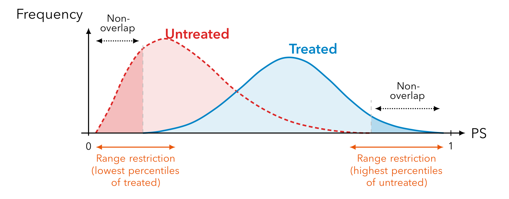

본 포스트는 서울대학교 GSDS Sanghack Lee 교수님의 Causal Inference 강의 자료(10-2강 IPW and Doubly Robust Estimator)를 바탕으로, 강의를 처음 듣는 독자도 논리적 흐름을 따라갈 수 있도록 재구성한 것입니다. 원 슬라이드는 Duke University Fan Li 교수님의 강의 자료를 계보로 합니다.
한 줄 요약 (TL;DR)
“처치 배정 모형과 결과 회귀 모형 중 하나만 맞아도 평균 처치 효과를 일치 추정할 수 있다.”
앞 회차에서 비교란성과 양의 확률성 가정 아래 \(E[Y(x)] = E_Z\big[E[Y \mid X=x, Z]\big]\)라는 식별식을 얻었지만, 이 식을 유한한 표본에서 실제로 어떻게 추정할 것인가는 열린 문제로 남아 있었습니다. 이번 회차는 그 추정 단계를 다룹니다. 고차원 공변량 \(Z\)를 스칼라 하나로 압축하는 성향 점수 \(e(Z)\)를 도입하면, 처치를 받기 어려웠던 사람에게 큰 가중치를 주는 역확률 가중(IPW) 만으로 교란을 제거할 수 있습니다. 다만 IPW는 성향 점수 모형이 틀리는 순간 무너지고, 결과 회귀는 결과 모형이 틀리는 순간 무너집니다. 이중 강건(DR) 추정량은 두 추정량을 하나로 엮어, 둘 중 하나만 올바르게 설정되어도 일치성이 유지되도록 만듭니다 — 맞힐 기회를 두 번 주는 셈입니다.
복습: PO 프레임워크의 핵심 가정 (Recall: Key Assumptions from PO Framework)
관측 연구(observational study)에서 처치 효과를 추정할 때 가장 큰 걸림돌은 교란(confounding)입니다. 처치 \(X\)를 받을 확률이 공변량 \(Z\)에 따라 달라진다면, 단순한 처치군-대조군 평균 차이는 처치 효과가 아니라 “애초에 다른 사람들”을 비교한 결과를 담게 됩니다.
앞 회차의 잠재적 결과(potential outcome) 프레임워크는 이 문제를 다음 세 가지 가정으로 정리했습니다. 이번 회차의 모든 추정량은 이 세 가정 위에 서 있으므로, 먼저 짚고 넘어가겠습니다.
- 비교란성(unconfoundedness, no unmeasured confounding) — 측정되지 않은 교란 변수가 없다는 가정입니다. \[ \{Y(1), Y(0)\} \perp\!\!\!\perp X \mid Z \]
- 양의 확률성(positivity, overlap) — 공변량 값이 무엇이든 처치군과 대조군에 모두 속할 가능성이 열려 있어야 합니다. \[ 0 < P(X = 1 \mid Z) < 1 \]
- 조정을 통한 ATE의 식별(identification of the ATE via adjustment) — 위 두 가정이 성립하면 잠재적 결과의 평균이 관측 가능한 양으로 환원됩니다. \[ E[Y(x)] = E_Z\big[E[Y \mid X = x, Z]\big] \]
- 세 번째 식은 식별(identification)의 결과일 뿐, 곧바로 추정(estimation)의 방법을 알려 주지는 않습니다. \(Z\)가 고차원이면 \(E[Y \mid X=x, Z]\)를 그대로 추정하는 일 자체가 어렵기 때문입니다.
- 이번 회차의 주제가 바로 그 간극입니다. 관측 자료로부터 \(E[Y(x)]\)를 실제로 추정하는 두 갈래의 도구를 정리합니다.
- 성향 점수(Propensity Score, PS)를 통한 역확률 가중(Inverse Probability Weighting, IPW) — 처치 배정 메커니즘 \(X \sim Z\)를 모형화하는 접근
- 이를 결과 회귀(Outcome Regression)와 결합한 이중 강건(Doubly Robust, DR) 추정량 — 두 모형 중 하나만 맞아도 일치성(consistency)을 보장받는 강력한 안전장치
- 전반부는 PS의 정의와 균형 성질, IPW 추정량과 그 변형(Hájek, 절단/트리밍)을 다루고, 후반부는 DR 추정량의 구성과 이중 강건성의 증명을 단계별로 따라갑니다.
1. 성향 점수 (Propensity Score, PS)
1.1 정의
성향 점수는 처치 이전(pre-treatment) 공변량 \(Z\)가 주어졌을 때 처치를 받을 조건부 확률로 정의됩니다.
\[ e(Z) = P(X = 1 \mid Z) = E(X \mid Z) \]
여기서 \(Z = (Z_1, \dots, Z_p)\)는 \(p\)개의 공변량 벡터입니다.
- 두 번째 등식 \(P(X=1\mid Z) = E(X\mid Z)\)는 \(X\)가 0/1 이진 변수이기 때문에 성립합니다. 베르누이 확률변수의 기댓값은 곧 “1이 될 확률”이므로, 확률과 기댓값이 같은 값을 가리킵니다.
- PS는 고차원일 수 있는 공변량 벡터 \(Z\)를 하나의 스칼라 값 \(e(Z) \in [0,1]\)로 요약합니다. 바로 이 “차원 축약” 성질이 PS의 실용성을 만듭니다.
2. PS의 균형 성질 (Balancing Property of PS)
2.1 균형 성질 (Property 1)
성질 1. 성향 점수 \(e(Z)\)는 처치군 간 모든 공변량 \(Z\)의 분포를 균형(balance) 있게 만듭니다.
\[ X \perp\!\!\!\perp Z \mid e(Z) \]
- 즉, PS가 같은 값을 갖는 부분 모집단 안에서는 처치 여부 \(X\)와 공변량 \(Z\)가 독립입니다.
- 직관적으로, 동일한 처치 확률 \(e(Z)\)를 가진 사람들끼리 모아 놓으면, 그 안에서는 처치를 받았든 안 받았든 공변량 분포가 통계적으로 같다는 의미입니다. 마치 그 부분 모집단 안에서는 처치가 무작위로 배정된 것처럼 행동합니다.
2.2 균형 점수(Balancing Score)와 PS의 위상
- 균형 점수(balancing score) \(b(Z)\)란 공변량의 함수로서 다음을 만족하는 것을 말합니다. \[ X \perp\!\!\!\perp Z \mid b(Z) \]
- 성향 점수 \(e(Z)\)는 균형 점수입니다. (그리고 \(Z\) 그 자체도 자명하게 균형 점수입니다 — \(X \perp\!\!\!\perp Z \mid Z\)는 항상 성립.)
- Rosenbaum and Rubin (1983)은 \(e(Z)\)가 가장 거친(coarsest) 균형 점수임을 보였습니다. 즉, 모든 균형 점수 중에서 정보를 가장 많이 압축한(가장 저차원의) 것이 성향 점수입니다. 다른 모든 균형 점수는 \(e(Z)\)의 함수로 표현될 수 있습니다.
3. PS와 비교란성 (Propensity Score: Unconfoundedness)
3.1 비교란성의 전이 (Property 2)
성질 2. 만약 \(X\)가 \(Z\)가 주어졌을 때 비교란(unconfounded)이라면, \(X\)는 \(e(Z)\)가 주어졌을 때도 비교란입니다.
\[ \{Y_i(1), Y_i(0)\} \perp\!\!\!\perp X_i \mid Z_i \;\Longrightarrow\; \{Y_i(1), Y_i(0)\} \perp\!\!\!\perp X_i \mid e(Z_i) \]
여기서 \(Y_i(1), Y_i(0)\)는 잠재적 결과(potential outcomes)입니다.
이 성질이 PS의 핵심 가치입니다. 그 함의는 다음과 같습니다.
- 비교란성을 보장하는 공변량 벡터 \(Z\)가 주어졌을 때, PS의 차이만 보정해도 공변량 차이로 인한 모든 편향(bias)이 제거됩니다.
- 즉, \(p\)차원 공변량 \(Z\) 전체를 통제할 필요 없이, 스칼라 \(e(Z)\) 하나만 통제하면 충분합니다. \(e(Z)\)는 관측 공변량들을 압축한 요약 점수(summary score)로 볼 수 있습니다.
- 이는 고차원 공변량 상황에서 발생하는 “차원의 저주(curse of dimensionality)”를 우회하는 길을 열어 줍니다.
4. 역확률 가중 (Inverse Probability Weighting, IPW)
Inverse Probability of Treatment Weighting(IPTW)이라고도 부릅니다.
4.1 ATE의 IPW 표현
평균 처치 효과(Average Treatment Effect, ATE)는 다음의 가중 기댓값 형태로 표현됩니다.
\[ \tau_{\text{ATE}} = E\!\left[\frac{XY}{e(Z)} - \frac{(1-X)Y}{1-e(Z)}\right] \]
4.2 첫 번째 항이 \(E[Y(1)]\)이 되는 이유 (단계별 유도)
핵심은 \(E\!\left[\dfrac{XY}{e(Z)}\right] = E[Y(1)]\) 임을 보이는 것입니다.
1단계 — 관측 결과와 잠재적 결과의 연결. 일관성(consistency) 가정 — 실제로 받은 처치에 해당하는 잠재적 결과가 그대로 관측된다는 가정 — 하에서 관측 결과는 \(Y = XY(1) + (1-X)Y(0)\)입니다. 따라서 \[ XY = X\{XY(1) + (1-X)Y(0)\} = X Y(1) \] (\(X^2 = X\)이고 \(X(1-X)=0\)이므로). 즉, 분자 \(XY\)는 사실상 \(XY(1)\)과 같습니다.
2단계 — 반복 기댓값(law of iterated expectations). \[ E\!\left[\frac{XY}{e(Z)}\right] = E\!\left[\frac{XY(1)}{e(Z)}\right] = E\!\left[\frac{1}{e(Z)}\,E\big[XY(1) \mid Z\big]\right] \] \(Z\)로 조건부를 취하면 \(e(Z)\)는 상수처럼 밖으로 빠집니다.
3단계 — 비교란성 적용. 비교란성 \(X \perp\!\!\!\perp Y(1) \mid Z\)에 의해 조건부 기댓값이 분리됩니다. \[ E\big[XY(1)\mid Z\big] = E(X\mid Z)\,E\big[Y(1)\mid Z\big] = e(Z)\,E\big[Y(1)\mid Z\big] \]
4단계 — 정리. \[ E\!\left[\frac{XY}{e(Z)}\right] = E\!\left[\frac{e(Z)}{e(Z)}\,E\big[Y(1)\mid Z\big]\right] = E\big\{E[Y(1)\mid Z]\big\} = E[Y(1)] \]
대칭적으로 두 번째 항은 \(E[Y(0)]\)이 되어, 전체적으로 \(\tau_{\text{ATE}} = E[Y(1)] - E[Y(0)]\)가 됩니다.
- 이 추정량은 표본 조사(survey sampling) 문헌의 Horvitz-Thompson(HT) 추정량과 본질적으로 동일한 아이디어입니다.
4.3 역확률 가중치(IPW)의 정의
처치 여부에 따라 가중치를 다음과 같이 정의합니다.
\[ \begin{cases} w_1(Z_i) = \dfrac{1}{e(Z_i)}, & X_i = 1 \text{ 인 경우} \\[2mm] w_0(Z_i) = \dfrac{1}{1-e(Z_i)}, & X_i = 0 \text{ 인 경우} \end{cases} \]
- 직관: 처치를 받기 어려운(즉 \(e(Z_i)\)가 작은) 사람이 실제로 처치를 받았다면, 그는 “관측되기 힘든 사례”이므로 더 큰 가중치를 부여하여 모집단을 대표하게 만듭니다.
4.4 ATE의 IPW 추정량
\[ \hat\tau_{\text{ipw},1} = \frac{1}{N}\left(\sum_{i=1}^{N}\frac{Y_i X_i}{e(Z_i)} - \sum_{i=1}^{N}\frac{Y_i(1-X_i)}{1-e(Z_i)}\right) = \frac{1}{N}\sum_{i=1}^{N}\Big\{Y_i X_i w_1(Z_i) - Y_i(1-X_i) w_0(Z_i)\Big\} \]
- 이는 두 그룹 간 가중 결과(weighted outcomes)의 평균 차이이며, (참 PS를 알 때) ATE의 불편(unbiased) 추정량입니다.
5. 가중치 정규화 (Normalize the Weights)
5.1 문제 제기
위 추정량에서 처치군 가중치의 합을 살펴봅시다.
\[ \frac{1}{N}\sum_{i=1}^{N}\frac{X_i}{e(Z_i)} \;=\; ? \]
- 이론적으로는 4.2절과 동일한 논리로 \[ E\!\left[\frac{X}{e(Z)}\right] = E\!\left[\frac{E(X\mid Z)}{e(Z)}\right] = E\!\left[\frac{e(Z)}{e(Z)}\right] = 1 \] 이 되어야 합니다.
- 그러나 추정된 PS \(\hat e(Z_i)\)를 사용하는 유한 표본에서는 \[ \frac{1}{N}\sum_{i=1}^{N}\frac{X_i}{\hat e(Z_i)} \neq 1 \] 이 되는 경우가 흔합니다. 즉, 가중치 합이 1에서 벗어나 추정량이 불안정해집니다.
5.2 Hájek 추정량 (가중치 정규화)
- 모범 사례(good practice): 어떤 가중 방법(IPW 포함)을 쓰든, 각 그룹 내 가중치 총합이 1이 되도록 정규화하는 것이 좋습니다.
- 방법은 간단합니다. 각 단위의 가중치를 그 그룹 가중치 합으로 나누어 줍니다: \(w_i / \sum_{i:X=x} w_i\) (\(x=0,1\)).
그 결과가 Hájek 추정량입니다.
\[ \hat\tau_{\text{ipw},2} = \frac{\sum_{i=1}^{n} Y_i X_i w_1(Z_i)}{\sum_{i=1}^{n} X_i w_1(Z_i)} - \frac{\sum_{i=1}^{n} Y_i(1-X_i) w_0(Z_i)}{\sum_{i=1}^{n} (1-X_i) w_0(Z_i)} \]
- 분모가 곧 가중치 정규화 상수 역할을 합니다. 분자·분모가 동일한 가중치 합으로 스케일링되므로 추정이 안정화됩니다.
- 분산 감소 효과: \(V(\hat\tau_{\text{ipw},2}) \le V(\hat\tau_{\text{ipw},1})\)이 성립하여 더 안정적인 추정을 제공합니다 (Hirano, Imbens, Ridder, 2003).
- 이렇게 정규화된 가중치는 “안정화 가중치(stabilized weights)”라고도 불립니다 (Hernán, Robins, Brumback, 2000).
6. (Digression) HT냐 Hájek냐?
잠시 곁길로 새어, 이 “정규화할 것인가”라는 질문이 인과추론만의 고민이 아니라는 점을 짚어 두겠습니다. 표본 조사 문헌에서는 같은 질문이 훨씬 오래전부터 논의되어 왔습니다.
- 서로 다른 표집 확률 \(p_k\)로 관측된 표본에서 모집단 평균을 추정한다고 합시다. 표집 지시자를 \(I_k\)(\(\Pr[I_k = 1] = p_k\))라 하면, 모집단 총합의 추정량은 \(\hat S = \sum_{k=1}^{n} Y_k I_k / p_k\)이고, 표본 크기 자체의 추정량은 \(\hat n = \sum_{k=1}^{n} I_k / p_k\)입니다.
- 이때 분모로 무엇을 쓸 것이냐가 갈림길입니다.
- Horvitz-Thompson(= 정규화하지 않은 IPW): \(\hat\mu_{\text{HT}} = \hat S / n\) — 실제 표본 크기 \(n\)으로 나눕니다.
- Hájek(= 정규화한 IPW): \(\hat\mu_{\text{Hájek}} = \hat S / \hat n\) — 추정된 표본 크기 \(\hat n\)으로 나눕니다. 즉 가중치 합으로 정규화하는 것이며, 앞 절의 \(\hat\tau_{\text{ipw},2}\)가 바로 이 형태입니다.
- 둘 중 무엇이 나은가는 Trotter & Tukey (1954)까지 거슬러 올라가는 고전적 양자택일 문제입니다. 그리고 굳이 하나를 고를 필요도 없습니다 — 두 추정량은 하나의 모수 \(\lambda \in \mathbb{R}\)로 연속적으로 이어집니다. \[ \hat\mu_\lambda = \frac{\hat S}{(1-\lambda)\,n + \lambda\,\hat n} \] \(\lambda = 0\)이면 HT, \(\lambda = 1\)이면 Hájek이 되고, 그 사이 값은 두 추정량의 절충에 해당합니다. (관련 논문: arXiv:2106.07695)
7. IPW는 가중 모집단을 만든다 (IPW creates a Weighted Population)
- IPW는 가중 모집단(weighted population, 즉 목표 모집단)을 만들어 냅니다. 이는 연구 표본이 대표하게 되는 모집단을 의미합니다.
- 이 가중 모집단에서는 두 그룹 간 공변량 분포가 균형을 이룹니다. 이는 다음 식으로 확인할 수 있습니다. \[ E\!\left[\frac{ZX}{e(Z)}\right] = E\!\left[\frac{Z(1-X)}{1-e(Z)}\right] \]
- 좌변(처치군 가중 공변량 평균)과 우변(대조군 가중 공변량 평균)이 같다는 것은, 가중치를 적용한 세계에서는 공변량 \(Z\)가 처치군과 대조군 사이에 균형 있게 분포함을 뜻합니다.
- 직관: 표집될 확률이 낮은 단위일수록, 그것이 대표해야 할 모집단의 크기는 더 큽니다 — 그래서 더 큰 가중치를 받습니다.
8. 장점과 단점 (Pros and Cons)
8.1 장점 (가중법 일반)
- 단순함: Horvitz-Thompson 추정량이라는 탄탄한 이론적 기반 위에 서 있으면서도 구현이 간단합니다.
- 결과에 대한 모형-자유(model-free for the outcome): 결과 \(Y\)가 공변량 \(Z\)에 어떻게 의존하는지를 전혀 모형화하지 않습니다. 결과 모형 오설정의 위험을 애초에 지지 않는다는 뜻이며, 뒤에서 볼 결과 회귀 접근과 정확히 대비되는 지점입니다.
- 명시적 목표 모집단(explicit target population): 가중치를 어떻게 정의하느냐만으로 추정 대상(ATE, ATT 등)을 명시적으로 지정할 수 있습니다.
- 전역 균형(global balance): 개별 단위를 짝지어 맞추는 대신 전체 공변량 분포 수준에서 균형을 추구합니다.
- 확장성: 시변 처치(time-varying treatments)와 주변 구조 모형(marginal structural model, MSM) 같은 더 복잡한 설정으로 자연스럽게 확장됩니다.
8.2 단점 (IPW 특유)
- PS 모형 오설정(misspecification)에 더 민감합니다.
- 극단적 가중치 문제: PS가 0이나 1에 가까운 단위는 극단적으로 큰 가중치를 받습니다. 이를 다루기 위한 임시방편(ad-hoc) 결정이 많이 필요합니다 — 다음 절의 트리밍/절단이 그 대표적 처방입니다.
9. 성향 점수 트리밍과 절단 (PS Trimming and Truncation)
극단적 PS로 인한 불안정성을 완화하기 위한 세 가지 전략입니다.
9.1 대칭 트리밍 (Symmetric Trimming, Crump et al., 2009)
- 추정 PS가 구간 \([\alpha,\ 1-\alpha]\) 밖에 있는 환자를 제외(exclude)합니다.
- 경험 법칙(rule of thumb): \(\alpha = 0.1\).
9.2 비대칭 트리밍 (Asymmetric Trimming, Stürmer et al., 2010)
- 처치군과 대조군이 형성하는 공통 PS 범위(common PS range) 밖의 환자를 제외합니다. 구체적으로:
- 전체 단위 중, PS가 처치군의 \(q\) 분위수보다 낮은 단위를 추가로 제외합니다.
- 전체 단위 중, PS가 대조군의 \((1-q)\) 분위수보다 높은 단위를 제외합니다.
9.3 성향 점수 절단 (Truncation)
- 추정 PS가 \(\alpha\)보다 낮으면 \(\alpha\)로, \(1-\alpha\)보다 높으면 \(1-\alpha\)로 값을 잘라서 대체(cap)합니다.
- 트리밍이 단위를 버리는 반면, 절단은 단위를 유지하되 가중치를 제한한다는 점이 다릅니다.

10. RCT에서 공변량 보정을 위한 PS 가중 (PS Weighting for Covariate Adjustment in RCT)
- PS 가중은 본래 관측 연구(observational study) 맥락에서 발전했습니다.
- 그러나 PS는 무작위 시험(RCT)에서의 공변량 보정에도 사용될 수 있습니다.
- RCT에서도 우연한 불균형(chance imbalance)은 흔하며, 공변량 보정은 추정의 정밀도(precision)를 향상시킵니다.
- RCT에서 공변량 보정을 위한 PS 가중 절차는 관측 연구와 다르지 않습니다.
11. 가중 vs. 균형 (Weighting vs. Balancing)
11.1 동기: 기댓값 균형 vs. 유한 표본 균형
- IPW와 같은 “균형 가중치(balancing weights)”는 공변량을 기댓값(in expectation) 수준에서 균형 있게 만들지만, 유한 표본(finite samples)에서는 균형을 보장하지 못합니다.
- 이에 최근에는 PS 추정을 우회하고 공변량을 직접 균형 맞추는(directly balance) 추정량들이 제안되었습니다.
11.2 직접 균형의 목표
가중 평균 공변량이 두 그룹에서 근사적으로 같아지도록 하는 가중치 \(w_i\)를 찾는 것이 목표입니다.
\[ \frac{1}{N_1}\sum_{i=1}^{N}w_i X_i Z_i = \frac{1}{N_1}\sum_{i=1}^{N}w_i (1-X_i) Z_i \]
- 일반적 아이디어: 위와 같은 균형 제약(balance constraints) 하에서 가중치의 변동(예: 엔트로피, 변동계수)을 최소화합니다. 가중치가 너무 들쭉날쭉하면 분산이 커지므로, 균형을 맞추되 가중치를 최대한 고르게 만드는 절충을 찾는 것입니다. 이렇게 정의된 가중치는 닫힌 형태로 주어지지 않으므로, 통상 최적화 알고리즘을 풀어서 얻습니다.
11.3 관련 문헌
- Entropy balancing (Hainmueller, 2011)
- Covariate Balancing Propensity Score (CBPS) (Imai and Ratkovic, 2014)
- Stabilized balancing weights (Zubizarreta, 2015)
- Inverse probability tilting (Graham, Pinto, Egel, 2012; 2016, JBES)
- Approximate residual balancing (Athey, Imbens, Wager, 2016)
11.4 핵심 주의점: 미지정 함수의 위험
- 위 균형 방법들은 모두 분석자가 명시한 \(Z\)의 함수(예: 적률)만을 균형 맞춥니다.
- 질문: 결과 모형에 중요한 \(Z\)의 어떤 함수가 명시되지 않으면 어떻게 될까요?
- 예시: 참 결과 모형이 \(Y \sim Z_1 + Z_2 + Z_1 Z_2\)인데, 우리가 \(Z_1, Z_2, Z_1^2, Z_2^2\)(및 고차 적률)는 균형 맞추되 상호작용항 \(Z_1 Z_2\)는 균형 맞추지 않았다고 합시다. 이 경우 \(Z_1 Z_2\)가 심하게 불균형하면, 결국 편향된 결과를 얻게 됩니다.
- 이 한계가 다음 장에서 다룰 이중 강건 추정의 동기를 제공합니다 — 결과 모형의 정보를 명시적으로 끌어들이자는 것입니다.
Part II. 이중 강건 추정 (Doubly Robust Estimation)
여기서부터는 IPW와 결과 회귀를 하나로 엮는 이중 강건 추정으로 넘어갑니다. 두 접근이 각각 무엇을 가정하고 무엇이 틀어지면 무너지는지를 먼저 정리한 뒤, 그 결합이 왜 “둘 중 하나만 맞아도” 되는지를 단계별로 확인하겠습니다.
12. 교란과 핵심 용어 (Confounding and Key Terminology)
12.1 교란 (Confounding)
- 교란 변수 \(Z\)(또는 공통 원인; DAG 참고)는 연관(association)과 인과(causation) 사이의 주된 장애물입니다.
- 이를 다루는 두 갈래의 모형화가 있습니다.
- 결과 회귀(Outcome Regression): \(X=x\) 안에서 \(Y \sim Z\) 모형이 필요합니다.
- 성향 점수 방법(Propensity Score methods): \(X \sim Z\) 모형이 필요합니다.
- 이중 강건성(double robustness)은 이 둘을 결합하여 달성됩니다.
- 이 장에서는 추정 대상(estimand)으로 ATE \(\tau\)에 집중합니다.
12.2 핵심 용어 (Key Terminology)
이후의 논의는 “모형이 맞았다 / 틀렸다”는 표현에 전적으로 기대고 있습니다. 이 말이 정확히 무엇을 뜻하는지 먼저 못박아 두겠습니다.
- 올바르게 설정된 모형(correctly specified model): 참 자료 생성 함수(true data-generating function)가 우리가 가정한 모형 부류(model class) 안에 실제로 들어 있는 경우를 말합니다.
- 예: 참 조건부 평균이 \(E[Y \mid X, Z] = \beta_0 + \beta_1 X + \beta_2 Z + \beta_3 XZ\)인데 우리가 상호작용항을 포함한 선형 모형을 적합했다면, 올바르게 설정된 것입니다.
- 오설정된 모형(misspecified model): 참 함수가 가정한 부류에 속하지 않는 경우입니다.
- 예: 참 관계가 \(Z\)에 대해 비선형인데 선형 모형을 적합했다면 오설정입니다.
- 이때 적합된 모형은 그 부류 안에서의 “최선의 근사(best approximation)”로 수렴하지만, 그 근사값은 일반적으로 편향되어 있습니다.
- 일치 추정량(consistent estimator): 표본 크기가 커질 때 참값으로 확률 수렴하는 추정량, 즉 \(\hat\theta_N \overset{p}{\longrightarrow} \theta\) (\(N \to \infty\))를 말합니다.
- 두 개념의 연결은 다음과 같습니다.
- 올바른 설정 \(\Longrightarrow\) 일치성 (정칙 조건 하에서).
- 오설정 \(\Longrightarrow\) 일반적으로 비일치 — 추정량이 수렴하기는 하되 엉뚱한 표적으로 수렴합니다.
- 이 대응 관계가 이번 장의 긴장을 만듭니다. IPW는 PS 모형이, 결과 회귀는 결과 모형이 올바르게 설정되어야만 일치합니다. 어느 쪽이든 하나를 반드시 맞혀야 한다면, 실무에서 그것은 상당한 부담입니다.
13. 결과 회귀(OR) 추정량 복습 (Outcome Regression Estimator: Recap)
- 추정 대상은 \(\tau = E[Y(1)] - E[Y(0)]\)입니다. 그런데 두 항은 \(X \leftrightarrow 1-X\), \(e \leftrightarrow 1-e\)의 치환에 대해 완전히 대칭이므로, 이하에서는 \(\mu_1 = E[Y(1)]\)의 추정에만 집중하고 \(\mu_0 = E[Y(0)]\)은 대칭으로 따라온다고 보겠습니다. 이 절약이 뒤의 증명을 절반으로 줄여 줍니다.
- 잠재적 결과의 참 평균 모형을 다음과 같이 표기합니다. \[ E(Y(x)\mid Z) = m_x(Z), \quad x = 0, 1 \] (앞 회차의 잠재적 결과 프레임워크에서 \(\mu_x(z)\)로 적었던 것과 같은 대상입니다. 이번 회차에서는 \(\mu_x\)를 주변 평균 \(E[Y(x)]\)에, \(m_x(Z)\)를 조건부 평균에 쓰기 위해 표기를 바꿉니다.)
- 모수 \(\alpha\)를 가진 회귀 모형으로 이를 추정합니다: \(\hat m_x(Z) = m_x(Z;\hat\alpha)\).
- \(\mu_1\)에 대한 회귀(조정) 추정량은 적합된 조건부 평균을 표본 전체에서 평균 내는 것입니다. \[ \hat\mu_{1,\text{adj}} = N^{-1}\sum_{i=1}^{N}\hat m_1(Z_i) \]
- 모형 \(m_1\)이 올바르게 설정되어 있다면 \(\hat\mu_{1,\text{adj}}\)는 \(E[Y(1)]\)에 대해 일치합니다.
- 회귀 기반 ATE 추정량은 \(N^{-1}\sum_{i=1}^{N}\{\hat m_1(Z_i) - \hat m_0(Z_i)\}\)이며, 다음 형태로도 쓸 수 있습니다. \[ \hat\tau_{\text{adj}} = N^{-1}\sum_{i=1}^{N}\Big\{X_i\big(Y_i - \hat m_0(Z_i)\big) + (1-X_i)\big(\hat m_1(Z_i) - Y_i\big)\Big\} \]
이 형태의 해석 (대입/imputation 관점):
처치 단위(\(X_i=1\))에 대해서는 기여가 \(Y_i - \hat m_0(Z_i)\) — 관측된 \(Y_i\)를 \(Y(1)\)로, 예측값 \(\hat m_0\)를 반사실 \(Y(0)\)로 대입합니다.
대조 단위(\(X_i=0\))에 대해서는 기여가 \(\hat m_1(Z_i) - Y_i\) — 예측값 \(\hat m_1\)를 반사실 \(Y(1)\)로, 관측된 \(Y_i\)를 \(Y(0)\)로 대입합니다.
만약 지정한 회귀 모형이 참이라면, \(\hat\tau_{\text{adj}}\)는 일치(consistent)이고 효율적(efficient)입니다.
14. PS 가중 추정량 복습 (PS Weighting Estimator: Recap)
- 참 성향 점수를 \(e(Z)\)로 표기합니다.
- 모형(예: 로지스틱 모형)으로 PS를 추정합니다: \(\hat e(Z) = e(Z;\hat\beta)\).
- 앞 절의 약속대로 \(\mu_1 = E[Y(1)]\)에 집중하면, IPW 추정량은 처치받은 단위만 역확률로 가중해 평균 낸 것입니다. \[ \hat\mu_{1,\text{ipw}} = \frac{1}{N}\sum_{i=1}^{N}\frac{Y_i X_i}{\hat e(Z_i)} \]
- 이를 두 팔에 모두 적용하면 ATE의 IPW 추정량이 됩니다. \[ \hat\tau_{\text{ipw}} = \frac{1}{N}\left(\sum_{i=1}^{N}\frac{Y_i X_i}{\hat e(Z_i)} - \sum_{i=1}^{N}\frac{Y_i(1-X_i)}{1-\hat e(Z_i)}\right) \]
- 만약 가정한 PS 모형이 올바르게 설정되었다면, \(\hat\mu_{1,\text{ipw}}\)(따라서 \(\hat\tau_{\text{ipw}}\))는 일치합니다. 다만 비효율적(inefficient)일 수 있습니다.
여기서 두 추정량의 대비가 선명해집니다. 회귀 추정량은 결과 모형에, IPW 추정량은 PS 모형에 각자의 운명을 걸고 있습니다. 어느 한쪽이 틀리면 그 추정량은 엉뚱한 값으로 수렴합니다.
- 질문: 회귀(OR) 추정량과 IPW 추정량의 장점을 결합할 수 있을까요? → 이중 강건(Doubly Robust) 추정량!
15. 이중 강건 추정량 (Doubly Robust Estimator)
15.1 추정량의 정의
OR 추정량과 IPW 추정량을 함께 떠올린 뒤,
\[ \hat\tau_{\text{adj}} = N^{-1}\sum_{i=1}^{N}\Big\{X_i\big(Y_i - \hat m_0(Z_i)\big) + (1-X_i)\big(\hat m_1(Z_i) - Y_i\big)\Big\} \] \[ \hat\tau_{\text{ipw}} = \frac{1}{N}\left(\sum_{i=1}^{N}\frac{Y_i X_i}{\hat e(Z_i)} - \sum_{i=1}^{N}\frac{Y_i(1-X_i)}{1-\hat e(Z_i)}\right) \]
이 둘을 결합한 DR 추정량은 다음과 같습니다.
\[ \hat\tau_{\text{dr}} = \frac{1}{N}\sum_{i=1}^{N}\left[\frac{X_i Y_i}{\hat e(Z_i)} - \frac{X_i - \hat e(Z_i)}{\hat e(Z_i)}\hat m_1(Z_i)\right] - \frac{1}{N}\sum_{i=1}^{N}\left[\frac{(1-X_i)Y_i}{1-\hat e(Z_i)} + \frac{X_i - \hat e(Z_i)}{1-\hat e(Z_i)}\hat m_0(Z_i)\right] \]
- 각 항은 IPW 항에 보정항(augmentation term)이 붙은 구조입니다. 보정항 \(\dfrac{X_i - \hat e(Z_i)}{\hat e(Z_i)}\hat m_1(Z_i)\)의 분자 \(X_i - \hat e(Z_i)\)는 처치 배정의 “잔차”로, PS가 맞으면 평균적으로 0이 됩니다.
15.2 참 모형 하에서의 식별 (단계별 유도)
참 \(m_x(Z)\)와 \(e(Z)\)를 사용할 때 다음이 성립함을 보입니다.
\[ \tau = E\!\left[\frac{XY}{e(Z)} - \frac{X - e(Z)}{e(Z)} m_1(Z)\right] - E\!\left[\frac{(1-X)Y}{1-e(Z)} + \frac{X - e(Z)}{1-e(Z)} m_0(Z)\right] \]
핵심 대수 변형. 첫 번째 대괄호 안을 정리합니다.
\[ \frac{XY}{e(Z)} - \frac{X - e(Z)}{e(Z)} m_1(Z) = \frac{XY - (X - e(Z))m_1(Z)}{e(Z)} = \frac{XY - X m_1(Z) + e(Z) m_1(Z)}{e(Z)} \] \[ = m_1(Z) + \frac{X\{Y - m_1(Z)\}}{e(Z)} \]
마찬가지로 두 번째 대괄호는 \(m_0(Z) + \dfrac{(1-X)\{Y - m_0(Z)\}}{1-e(Z)}\)로 정리됩니다. 따라서
\[ \tau = E\!\left[m_1(Z) + \frac{X\{Y - m_1(Z)\}}{e(Z)}\right] - E\!\left[m_0(Z) + \frac{(1-X)\{Y - m_0(Z)\}}{1-e(Z)}\right] \]
기댓값 계산. 첫 항의 보정 부분을 \(Z\)로 조건부 취하면, \(XY = XY(1)\)이고 비교란성 \(X \perp\!\!\!\perp Y(1)\mid Z\)에 의해 \[ E\!\left[\frac{X\{Y - m_1(Z)\}}{e(Z)} \,\Big|\, Z\right] = \frac{E(X\mid Z)}{e(Z)} E\big[Y(1) - m_1(Z)\mid Z\big] = \frac{e(Z)}{e(Z)} \cdot 0 = 0 \] (\(m_1\)이 참이므로 \(E[Y(1)\mid Z] = m_1(Z)\)). 그러므로 첫 항은 \(E[m_1(Z)] = E[Y(1)] = \mu_1\), 둘째 항은 \(\mu_0\)가 되어
\[ \tau = \mu_1 - \mu_0 = E[Y(1)] - E[Y(0)] \]
16. DR 추정량의 두 형태 (Two Forms)
참 PS와 결과 모형을 추정값으로 바꾸면, 수학적으로 동치인 두 가지 증강(augmented) 추정량을 얻습니다.
\[ \hat\tau_{\text{dr}} = \hat\mu_{1,\text{dr}} - \hat\mu_{0,\text{dr}} \]
형태 ① (IPW를 OR로 증강): \[ \hat\tau_{\text{dr}} = \frac{1}{N}\sum_{i=1}^{N}\left[\frac{X_i Y_i}{\hat e(Z_i)} - \frac{X_i - \hat e(Z_i)}{\hat e(Z_i)}\hat m_1(Z_i)\right] - \frac{1}{N}\sum_{i=1}^{N}\left[\frac{(1-X_i)Y_i}{1-\hat e(Z_i)} + \frac{X_i - \hat e(Z_i)}{1-\hat e(Z_i)}\hat m_0(Z_i)\right] \]
형태 ② (OR를 IPW로 증강): \[ \hat\tau_{\text{dr}} = \frac{1}{N}\sum_{i=1}^{N}\left[\hat m_1(Z_i) + \frac{X_i\{Y_i - \hat m_1(Z_i)\}}{\hat e(Z_i)}\right] - \frac{1}{N}\sum_{i=1}^{N}\left[\hat m_0(Z_i) + \frac{(1-X_i)\{Y_i - \hat m_0(Z_i)\}}{1-\hat e(Z_i)}\right] \]
- 형태 ②에서 \(\hat m_x(Z_i)\)는 분수 밖에 있습니다. 회귀 예측값을 그대로 두고, 그 위에 가중된 잔차를 더하는 구조이기 때문입니다. (§15.2의 대수 변형에서 얻은 \(m_1(Z) + \frac{X\{Y - m_1(Z)\}}{e(Z)}\)와 같은 형태입니다.)
- 두 추정량은 수학적으로 동치이지만, 통계적 함의는 다릅니다.
- 형태 ①: IPW 추정량을 결과 회귀(OR)로 증강.
- 형태 ②: OR 추정량을 IPW 잔차 보정으로 증강 — 회귀 예측값에서 출발해, 처치받은 단위의 예측 오차 \(Y_i - \hat m_1(Z_i)\)를 역확률로 가중해 더합니다.
- 통상 형태 ①을 이중 강건(DR) 추정량이라 부릅니다.
17. DR 추정량의 대칭성 (Symmetric)
DR 추정량에 집중하면, \(\hat\mu_{1,\text{dr}}\)와 \(\hat\mu_{0,\text{dr}}\)은 동일한 구조를 가집니다 (\(\hat e_i \equiv \hat e(Z_i)\), \(\hat m_x \equiv \hat m_x(Z_i)\)로 축약).
\[ \hat\mu_{1,\text{dr}} = N^{-1}\sum_{i=1}^{N}\left[\frac{X_i Y_i}{\hat e_i} - \frac{(X_i - \hat e_i)\hat m_1}{\hat e_i}\right] \]
\[ \hat\mu_{0,\text{dr}} = N^{-1}\sum_{i=1}^{N}\left[\frac{(1-X_i)Y_i}{1-\hat e_i} + \frac{(X_i - \hat e_i)\hat m_0}{1-\hat e_i}\right] = N^{-1}\sum_{i=1}^{N}\left[\frac{(1-X_i)Y_i}{1-\hat e_i} - \frac{\{(1-X_i) - (1-\hat e_i)\}\hat m_0}{1-\hat e_i}\right] \]
- 마지막 등식은 \(X_i - \hat e_i = -\{(1-X_i) - (1-\hat e_i)\}\)임을 이용해, \(\hat\mu_{0,\text{dr}}\)이 \(\hat\mu_{1,\text{dr}}\)과 정확히 같은 형태(처치 지시자를 \(1-X\)로, PS를 \(1-\hat e\)로 치환)임을 드러냅니다.
- 따라서 \(\hat\mu_{1,\text{dr}}\)의 성질만 분석하면 충분하며, \(\hat\mu_{0,\text{dr}}\)은 대칭(symmetric)으로 따라옵니다. 이하에서는 \(\hat\mu_{1,\text{dr}}\)이 \(\mu_1 = E[Y(1)]\)의 추정량으로서 갖는 성질을 살핍니다.
18. \(\hat\mu_{1,\text{dr}}\)은 무엇을 추정하는가?
간단한 대수 계산으로 \(\hat\mu_{1,\text{dr}}\)이 다음 값으로 수렴함을 보입니다.
\[ E\!\left[\frac{XY}{e(Z)} - \frac{X - e(Z)}{e(Z)} m_1(Z)\right] \]
유도. \(XY = XY(1)\)을 이용하고, \(XY(1) = e(Z)Y(1) + \{X - e(Z)\}Y(1)\)로 쪼개면
\[ \frac{XY}{e(Z)} = Y(1) + \frac{X - e(Z)}{e(Z)}Y(1) \]
따라서 \[ \frac{XY}{e(Z)} - \frac{X - e(Z)}{e(Z)} m_1(Z) = Y(1) + \frac{X - e(Z)}{e(Z)}\big\{Y(1) - m_1(Z)\big\} \]
기댓값을 취하면
\[ E\!\left[\frac{XY}{e(Z)} - \frac{X - e(Z)}{e(Z)} m_1(Z)\right] = \underbrace{E\{Y(1)\}}_{\text{목표}} + \underbrace{E\!\left[\frac{\{X - e(Z)\}}{e(Z)}\big\{Y(1) - m_1(Z)\big\}\right]}_{\displaystyle R \text{ (잔차 항)}} \]
- 즉, \(\hat\mu_{1,\text{dr}}\)은 “회귀 추정량 + 가중 잔차(weighted residuals)” 구조를 가집니다.
- \(\hat\mu_{1,\text{dr}}\)이 \(E\{Y(1)\}\)을 올바르게 추정하려면, 두 번째 항 \(R\)이 0이 되어야 합니다.
- 질문: 그렇다면 \(R = 0\)은 언제 성립할까요?
19. DR 추정량의 불편성: 두 시나리오
핵심 잔차 항을 다시 적습니다.
\[ R = E\!\left[\frac{\{X - e(Z)\}}{e(Z)}\big\{Y(1) - m_1(Z)\big\}\right] \]
여기서 \(e(Z)\)는 가정한(틀릴 수도 있는) PS 모형, \(m_1(Z)\)는 가정한(틀릴 수도 있는) OR 모형입니다. \(X\)의 참 평균은 \(e_{\text{true}}(Z)\), \(Y(1)\)의 참 조건부 평균은 \(m_{1,\text{true}}(Z)\)로 둡니다.
공통 단계 — \(Z\)로 조건부. 반복 기댓값과 비교란성 \(X \perp\!\!\!\perp Y(1)\mid Z\)를 적용하면
\[ R = E\!\left[E\!\left[\frac{X - e(Z)}{e(Z)}\{Y(1) - m_1(Z)\}\,\Big|\,Z\right]\right] = E\!\left[\frac{e_{\text{true}}(Z) - e(Z)}{e(Z)}\;\big\{m_{1,\text{true}}(Z) - m_1(Z)\big\}\right] \]
잔차 항이 두 오차의 곱 꼴이라는 점이 이중 강건성의 정수입니다.
19.1 시나리오 1: PS는 틀리고, OR은 맞음
- 가정한 PS 모형 \(e(Z;\beta)\)는 틀렸지만, 가정한 OR 모형 \(m_1(Z;\alpha)\)는 맞다고 합시다.
- 그러면 \(m_{1,\text{true}}(Z) - m_1(Z) = 0\).
- 구체적으로, \[ E\big\{Y(1) - m_1(Z)\mid Z\big\} = E\{Y(1)\mid Z\} - m_1(Z) = m_{1,\text{true}}(Z) - m_1(Z) = 0 \]
- 따라서 \(R = 0\). OR이 맞으면 PS가 틀려도 불편합니다.
19.2 시나리오 2: PS는 맞고, OR은 틀림
- 가정한 PS 모형 \(e(Z;\beta)\)는 맞지만, 가정한 OR 모형 \(m_1(Z;\alpha)\)는 틀렸다고 합시다.
- 그러면 \(e_{\text{true}}(Z) - e(Z) = 0\)이므로, 곱 전체가 0이 되어 \(R = 0\).
- PS가 맞으면 OR이 틀려도 불편합니다.
20. 이중 강건성 (Doubly Robustness)
- 위 두 시나리오 모두에서 잔차 항 \(R\)이 대표본에서 0으로 수렴하므로, \(\hat\mu_{1,\text{dr}}\)은 \(E(Y(1))\)에 대해 일치(점근적 불편)입니다.
- 대칭적으로 \(\hat\mu_{0,\text{dr}}\)도 \(E(Y(0))\)에 일치하므로, \(\hat\mu_{\text{dr}}\)은 ATE에 일치합니다.
- 당연히, 두 모형이 모두 맞으면 \(\hat\mu_{\text{dr}}\)은 ATE에 일치합니다.
\(\hat\tau_{\text{dr}}\)은 성향 점수 모형 또는 잠재적 결과 모형 중 하나만 올바르게 설정되어도(둘 다일 필요는 없음) ATE의 일치 추정량입니다.
21. 맺음말 (Concluding Remarks)
21.1 이중 강건성의 의의와 한계
- DR은 대표본(large sample) 성질입니다.
- 모형 오설정에 대한 보호막을 제공합니다 — “맞힐 기회를 두 번 준다(double chances to get it right)”는 표현이 적절합니다.
- \(e(Z)\)와 \(m_x(Z)\)가 모두 올바르게 모형화되면, \(\hat\tau_{\text{dr}}\)은 (대표본에서) IPW 추정량보다 작은 분산을 가집니다.
- 주의: 만약 결과 모형 \(m_x(Z)\)가 맞다면, \(\hat\tau_{\text{dr}}\)은 (대표본에서) 직접 회귀 추정량보다 큰 분산을 가집니다. 즉, 안전장치를 더하는 대가로 효율을 일부 희생할 수 있습니다.
21.2 실증적 교훈: 결과 모형의 우위
경험적 증거는 결과 모형(OR)이 PS 모형보다 더 중요한 역할을 한다고 시사합니다.
- 결과 모형의 오설정이 PS 모형의 오설정보다 훨씬 큰 편향을 야기합니다.
- PS 모형이 맞더라도, 오설정된 결과 모형은 통상 뚜렷한 편향으로 이어집니다.
- 실증적으로, PS 증강이 주는 추가 보호 효과는 다소 제한적입니다.
이중 강건성의 보장은 둘 중 하나가 정확히 맞을 때 작동합니다. 그런데 실무에서 흔한 상황은 “하나는 맞고 하나는 틀린” 것이 아니라 둘 다 어중간하게 틀린 경우입니다.
Kang and Schafer (2007, Statistical Science)는, PS 모형과 결과 모형이 모두 적당히 오설정된(실무에서 매우 흔한 시나리오) 경우 DR 추정량이 큰 편향과 큰 분산을 동시에 가질 수 있음을 보이는 예시를 제시했습니다. 두 모형 모두가 조금씩 틀리면 잔차 항 \(R\)의 두 오차 인자 중 어느 쪽도 0이 되지 않고, 그 곱이 \(\hat e(Z)\)로 나뉘며 증폭될 수 있기 때문입니다. “기회를 두 번 준다”는 말이 “두 번 다 빗나가도 괜찮다”는 뜻은 아닙니다.
정리하며 (Closing Remarks)
이번 회차는 성향 점수라는 하나의 스칼라에서 출발해, 그것을 가중치로 쓰는 IPW를 거쳐, 결과 회귀와의 결합인 이중 강건 추정량까지 나아갔습니다. 논증의 사슬을 단계별로 압축하면 다음과 같습니다.
| 단계 | 내용 | 근거 |
|---|---|---|
| ① 차원 축약 | 고차원 공변량 \(Z\)를 처치 확률이라는 스칼라 \(e(Z) = P(X=1\mid Z)\) 하나로 요약한다 | 성향 점수의 정의 (Rosenbaum and Rubin, 1983) |
| ② 축약해도 충분함 | \(e(Z)\)만 통제해도 \(Z\) 전체를 통제한 것과 같은 균형·비교란성을 얻는다 | 성질 1(균형 성질) · 성질 2(비교란성의 전이) |
| ③ 가중으로 교란 제거 | 각 단위를 \(1/e(Z)\)로 가중하면 \(E[XY/e(Z)] = E[Y(1)]\)이 되어 ATE가 식별된다 | 일관성 \(XY = XY(1)\) + 비교란성 + 반복 기댓값 |
| ④ 유한 표본 보정 | 추정 PS로는 가중치 합이 1이 아니므로 그룹별로 정규화한다(Hájek) — 분산이 줄어든다 | \(V(\hat\tau_{\text{ipw},2}) \le V(\hat\tau_{\text{ipw},1})\) (Hirano, Imbens, Ridder, 2003) |
| ⑤ 극단 가중치 처리 | \(e(Z)\)가 0 또는 1에 가까운 단위를 트리밍하거나 절단해 폭발하는 가중치를 막는다 | Crump et al. (2009) · Stürmer et al. (2010) |
| ⑥ 남은 약점 직시 | IPW는 PS 모형에, 결과 회귀는 결과 모형에 각자 운명을 건다 — 하나를 반드시 맞혀야 한다 | 올바른 설정 \(\Rightarrow\) 일치성, 오설정 \(\Rightarrow\) 비일치 |
| ⑦ 두 접근의 결합 | IPW에 결과 회귀 보정항을 더하면 \(\hat\mu_{1,\text{dr}} = E[Y(1)] + R\) 꼴이 되고, 잔차 항이 두 오차의 곱 \(R = E\!\big[\tfrac{e_{\text{true}} - e}{e}(m_{1,\text{true}} - m_1)\big]\)으로 인수분해된다 | DR 추정량의 대수 변형 |
| ⑧ 이중 강건성 | 곱의 인자 중 하나만 0이면 전체가 0이므로, 두 모형 중 하나만 맞아도 일치성이 유지된다 | 시나리오 1 · 시나리오 2 |
추정량별로 다시 정리하면 다음과 같습니다.
| 추정량 | 일치성 조건 | 효율 / 안정성 |
|---|---|---|
| OR (\(\hat\tau_{\text{adj}}\)) | OR 모형이 맞아야 함 | 맞으면 효율적 |
| IPW (\(\hat\tau_{\text{ipw}}\)) | PS 모형이 맞아야 함 | 정규화(Hájek) 시 분산 감소 |
| DR (\(\hat\tau_{\text{dr}}\)) | OR 또는 PS 중 하나만 맞으면 됨 | 둘 다 맞으면 IPW보다 효율적, 단 OR이 맞을 때는 직접 회귀보다 분산이 큼 |
IPW 계열은 처치 배정 메커니즘을 모형화하는 직관적이고 강력한 도구이지만, 극단적 가중치와 PS 오설정에 취약합니다. 이중 강건 추정량은 결과 회귀와 PS 가중을 결합해 모형 오설정에 대한 이중의 안전장치를 제공하지만, 만능은 아니며 — 특히 두 모형이 동시에 어긋날 때 — 그 보호막에는 한계가 있음을 기억해야 합니다.
개인적인 감상 몇 가지를 덧붙입니다.
- 가장 인상적인 지점은 이중 강건성이 어떤 정교한 장치가 아니라 잔차 항이 두 오차의 곱으로 인수분해된다는 대수적 사실 하나에서 나온다는 것입니다. \(R = E\big[\frac{e_{\text{true}} - e}{e}\{m_{1,\text{true}} - m_1\}\big]\)을 처음 보면 허탈할 정도로 단순합니다. 곱이니까 한 인자만 0이면 된다 — 이 한 줄이 “모형을 두 개 세우면 보험이 된다”는 아이디어를 정리로 만듭니다. 통계적 안전장치가 확률적 논증이 아니라 구조적 인수분해에서 나온다는 점이 오래 남습니다.
- 성향 점수의 진짜 기여는 차원 축약이 아니라 “축약해도 잃는 것이 없다”는 보장이라고 생각합니다. \(p\)차원을 1차원으로 줄이는 것 자체는 어떤 요약 통계량이라도 할 수 있습니다. 성질 2가 말하는 것은 비교란성이라는 성질이 그 축약을 통과해 살아남는다는 것이고, 이것이 없다면 \(e(Z)\)는 그저 편리한 숫자에 그쳤을 것입니다.
- 양의 확률성 가정이 실무에서 어떻게 배신하는지를 트리밍 절이 잘 보여 줍니다. \(0 < e(Z) < 1\)은 이론적으로는 부등식 하나지만, 유한 표본에서는 “\(e\)가 0.001인 단위 하나가 추정량 전체를 흔든다”는 형태로 나타납니다. 그래서 처방이 트리밍·절단 같은 임시방편(ad-hoc)일 수밖에 없고, \(\alpha = 0.1\) 같은 경험 법칙에 의존하게 됩니다. 가정 위반이 이론에서는 이분법으로, 실무에서는 연속적인 정도 문제로 나타난다는 점을 잘 드러내는 대목입니다.
- 실용적 한계도 정직하게 남아 있습니다. 강의가 스스로 짚듯, 실증적으로는 결과 모형의 오설정이 훨씬 큰 편향을 낳고 PS 증강의 추가 보호 효과는 제한적입니다. Kang and Schafer (2007)의 예시까지 고려하면, DR은 “두 모형 중 아무거나 맞히면 된다”는 면허가 아니라 결과 모형을 잘 세우려는 노력에 덧붙이는 보조 장치로 이해하는 편이 안전해 보입니다.
- 다음으로 이어지는 질문도 자연스럽게 남습니다. IPW는 가중치로 모집단 전체를 재구성하는 전역적 접근인데, 같은 목표를 개별 단위를 짝지어 달성하는 국소적 접근이 매칭(matching)입니다. 두 방법이 같은 추정 대상을 두고 무엇을 다르게 사는지는 13강 Matching에서 다룹니다. 그에 앞서 12강 CATE에서는, 지금까지 추정해 온 ATE라는 스칼라 하나가 애초에 충분한 답인지를 되묻습니다.